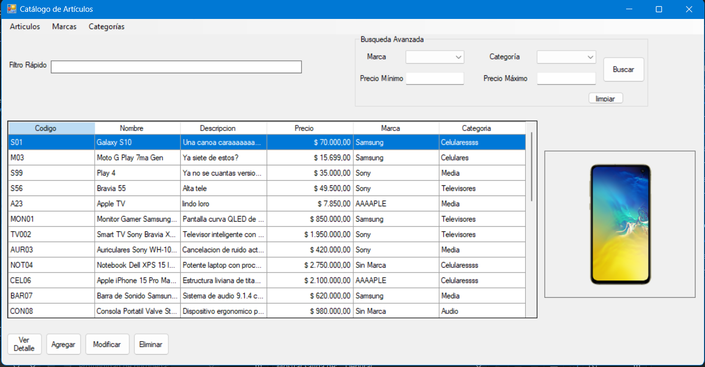
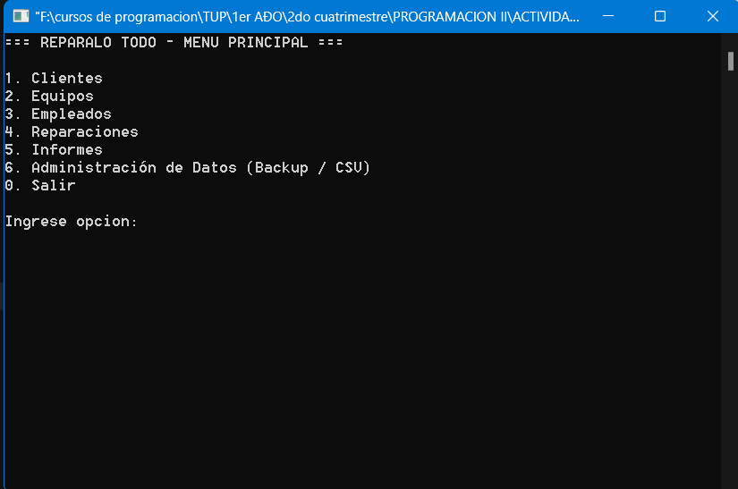
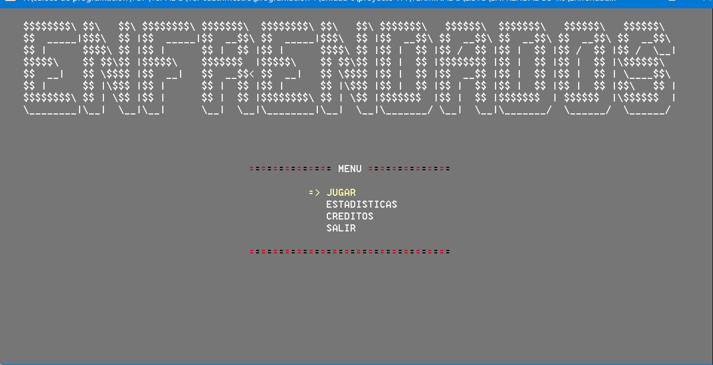
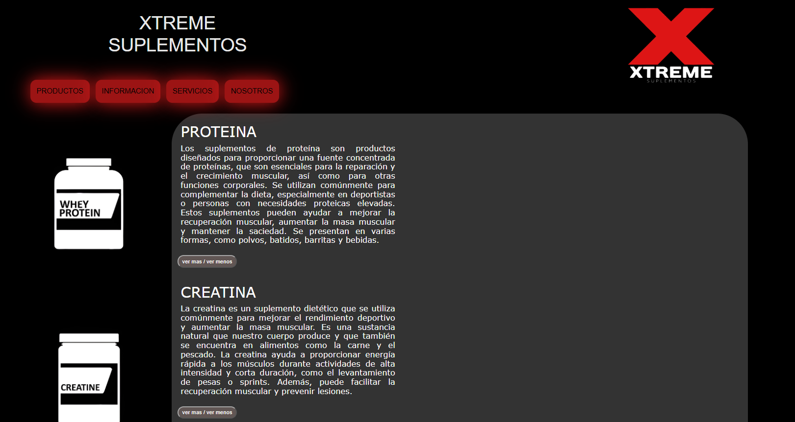

Desarrollador de Software en formación (UTN) enfocado en .NET (C#), APIs REST y MySQL.
Tecnologías: C# | .NET | ASP.NET | WinForms | Git & GitHub | PHP | MySQL
"Programador y estudiante en proceso..."
Conocé un poco más sobre mi trayectoria, formación académica y enfoque de desarrollo.
Desarrollador de Software en formación (UTN) enfocado en .NET (C#), APIs REST y MySQL.
Rosario - Santa Fe
Español e Inglés
Estudiante de Programación en UTN y profesor de ED Física.
Formación intensiva en desarrollo de software: arquitectura en capas, Programación Orientada a Objetos en C#, WinForms, bases de datos relacionales (SQL Server, MySQL), estructuras de datos y desarrollo backend.
Desarrollo web con PHP, MySQL, maquetación HTML/CSS/JS y una sólida base en disciplina, trabajo en equipo y liderazgo pedagógico.
Herramientas y lenguajes aplicados en proyectos de escritorio, backend y web.
Selección de desarrollos integradores, aplicaciones de escritorio y proyectos universitarios.

Aplicación de escritorio para la gestión de un catálogo de artículos, desarrollada como trabajo práctico de Programación III (TUP 2026 2C, comisión 121, Equipo L). Permite administrar artículos con sus imágenes, y las marcas y categorías disponibles, con toda la información persistida en SQL Server.

Este proyecto es una aplicación de consola desarrollada como trabajo integrador para la materia Programación II de la universidad. Su objetivo principal es llevar el control integral de los equipos que ingresan a un local de servicio técnico, las reparaciones realizadas sobre ellos y el personal asignado.

Enfrendados es un juego de dados para dos jugadores donde intervienen el azar, la toma de decisiones y las destrezas matemáticas. El objetivo principal es sumar la mayor cantidad de puntos a lo largo de un total de tres rondas o lograr una victoria automática al vaciar por completo la reserva propia de dados.

Página web creada para una tienda de suplementos como trabajo integrador de la diplomatura en programación web fullstack de la UTN FRRo. Utilizando principalmente PHP con MySQL como base de datos y HTML, CSS y JS para la maquetación web.
Canales de comunicación directa y repositorios donde comparto código y actividad.
¿Tenés alguna propuesta, proyecto o consulta? Completá el formulario y te responderé a la brevedad.